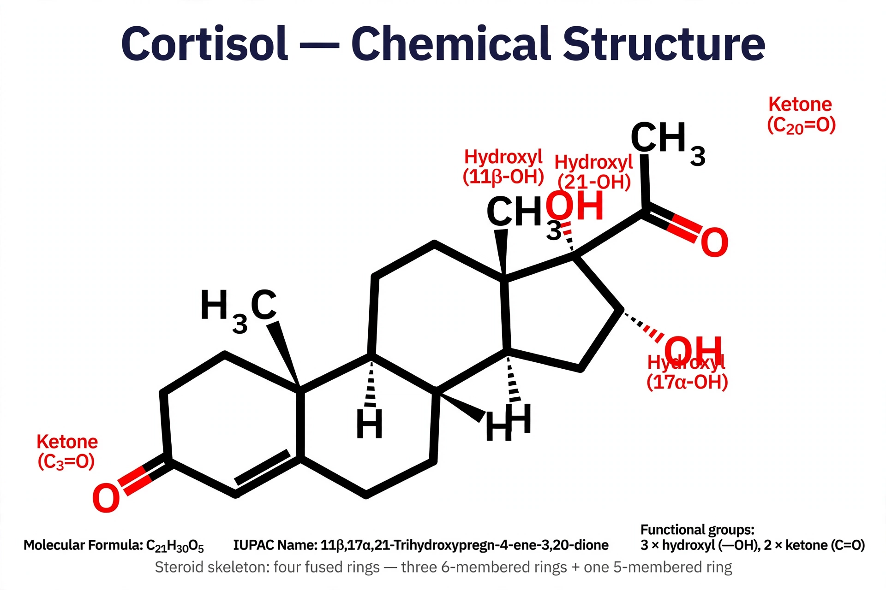

From Wikipedia, the free encyclopedia
Corticosteroids are a class of steroid hormones produced in the adrenal cortex of vertebrates, as well as synthetic analogues. They are involved in a wide range of physiological processes, including stress response, immune response, and regulation of inflammation, carbohydrate metabolism, protein catabolism, blood electrolyte levels, and behaviour.

Some synthetic steroids, such as prednisone and dexamethasone, have both glucocorticoid and mineralocorticoid activity.
Corticosteroids cross cell membranes and bind intracellular receptors, modulating gene transcription — suppressing pro-inflammatory mediators and promoting anti-inflammatory proteins. They also have rapid non-genomic effects.
Corticosteroids are used to treat allergies, asthma, autoimmune diseases such as rheumatoid arthritis and lupus, dermatitis, and adrenal insufficiency (replacement therapy). They are also used to suppress the immune system after organ transplantation.
Short-term side effects include weight gain, fluid retention, mood changes and raised blood sugar. Long-term use can cause Cushing's syndrome, osteoporosis, adrenal insufficiency, immunosuppression and cataracts.
The adrenal hormones were isolated in the 1930s–40s; Tadeus Reichstein, Edward Kendall and Philip Hench shared the 1950 Nobel Prize in Physiology or Medicine for the discovery of the hormones of the adrenal cortex and their therapeutic use in rheumatoid arthritis.
See also: Steroid, Anabolic steroid.